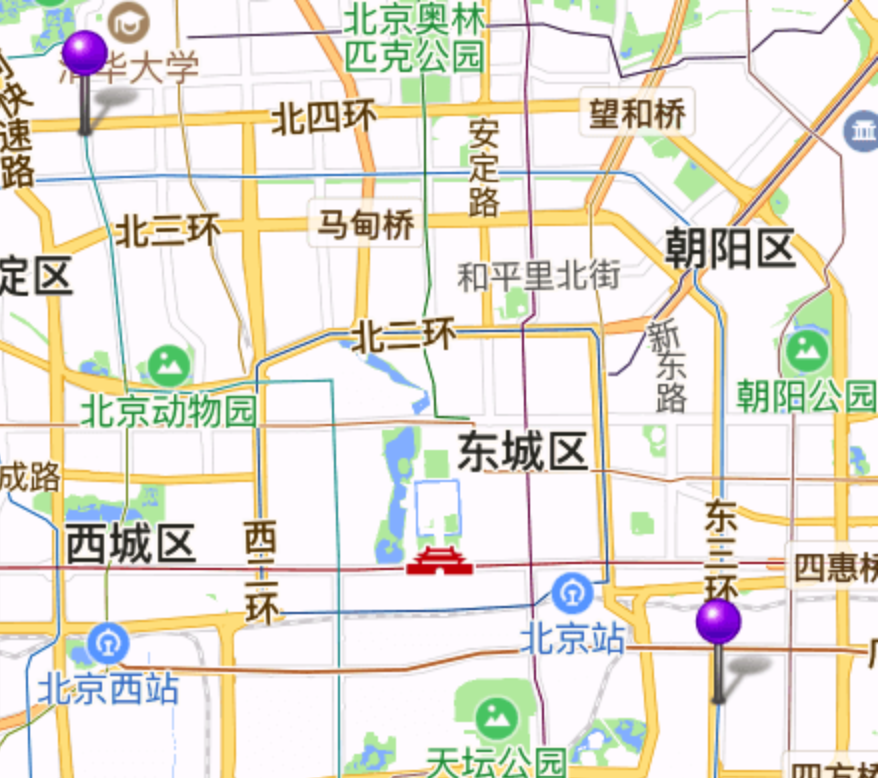
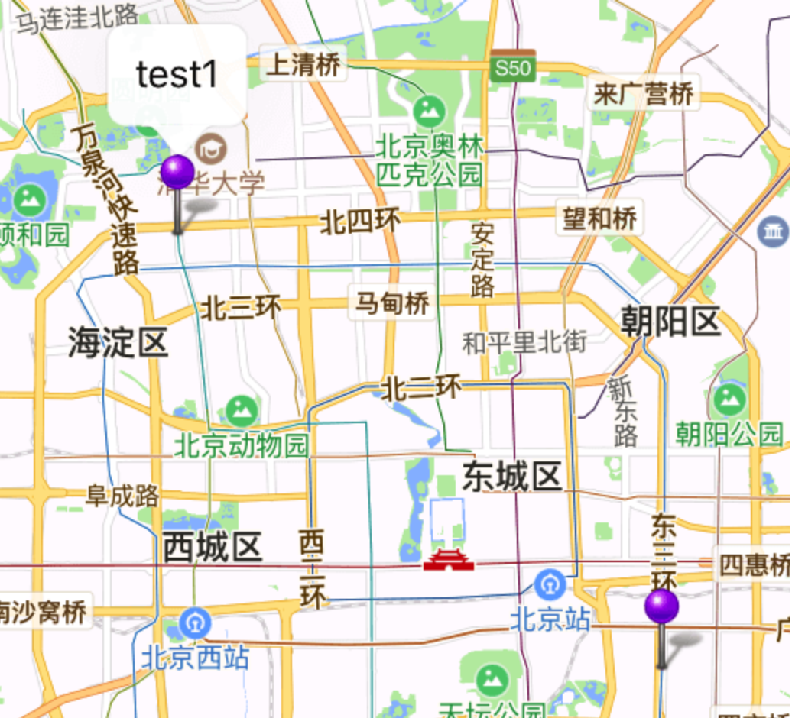
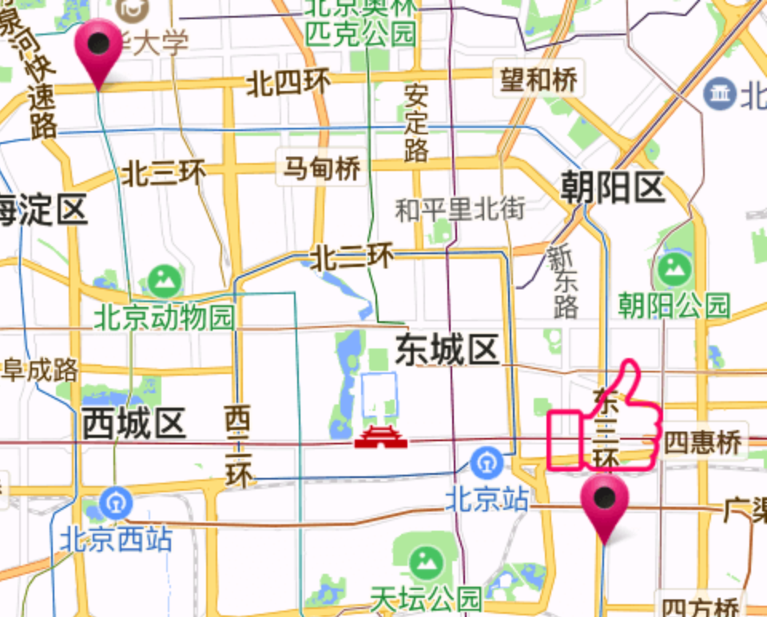
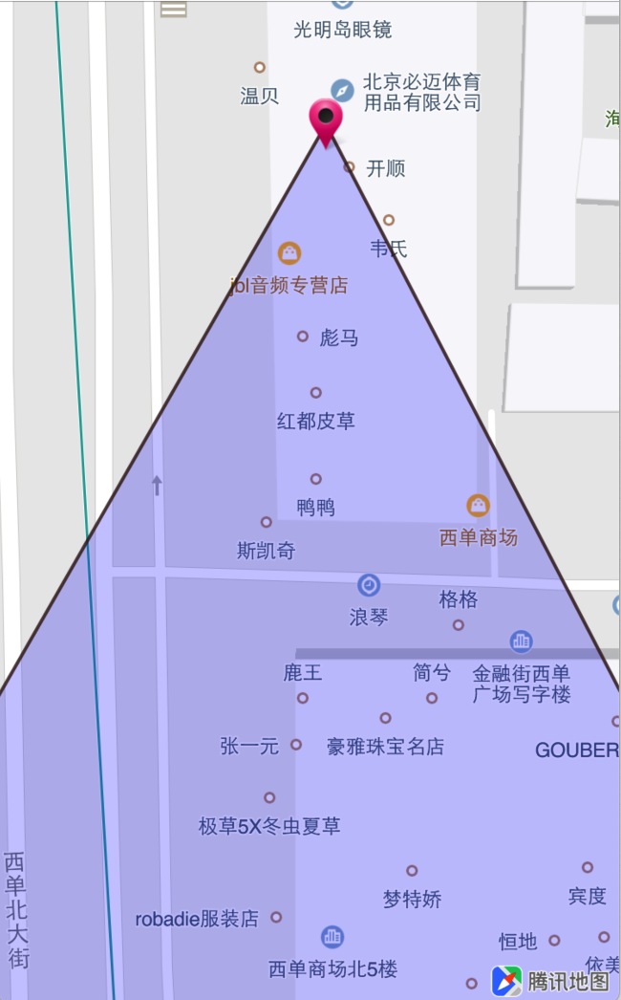
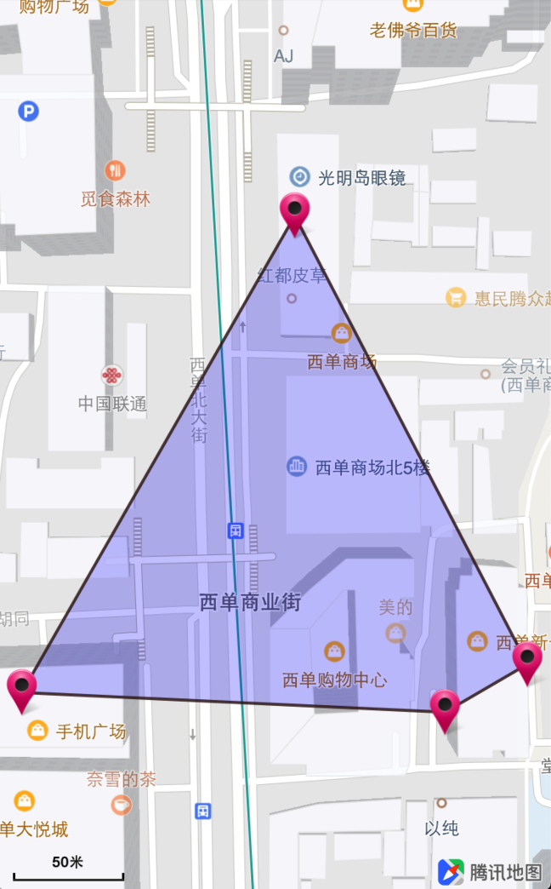

点标注
标注可以精确表示用户需要展示的位置信息，腾讯地图提供的标注功能允许用户自定义图标和信息窗，同时提供了标注的点击、拖动事件的回调。
SDK 提供的地图标注为QPointAnnotation类，不同的标记可以根据图标和改变信息窗的样式和内容加以区分。
1. 添加QPointAnnotation
下面是添加QPointAnnotation的代码示例：
@property (nonatomic, strong) NSMutableArray<id <QAnnotation> > *annotations;
// 点标注的View渲染
- (QAnnotationView *)mapView:(QMapView *)mapView viewForAnnotation:(id<QAnnotation>)annotation
{
if ([annotation isKindOfClass:[QPointAnnotation class]])
{
static NSString *pointReuseIndetifier = @"pointReuseIndetifier";
QPinAnnotationView *annotationView = (QPinAnnotationView*)[self.mapView dequeueReusableAnnotationViewWithIdentifier:pointReuseIndetifier];
if (annotationView == nil)
{
annotationView = [[QPinAnnotationView alloc] initWithAnnotation:annotation reuseIdentifier:pointReuseIndetifier];
}
return annotationView;
}
return nil;
}
// 设置点标注
- (void)setupAnnotations
{
self.annotations = [NSMutableArray array];
QPointAnnotation *annotation = [[QPointAnnotation alloc] init];
annotation.coordinate = CLLocationCoordinate2DMake(39.984083,116.316515);
[self.annotations addObject:annotation];
annotation = [[QPointAnnotation alloc] init];
annotation.coordinate = CLLocationCoordinate2DMake(39.884318,116.461515);
[self.annotations addObject:annotation];
}
- (void)setupMapView
{
self.mapView = [[QMapView alloc] initWithFrame:self.view.bounds];
self.mapView.delegate = self;
[self.view addSubview:self.mapView];
[self setupAnnotations];
[self.mapView addAnnotations:self.annotations];
}
运行工程，地图显示效果如下：

2. 标注的其他设置
默认的标注并不能显示气泡，在协议的回调函数mapView: viewForAnnotation:中设置对应的标注气泡和图标，代码如下：
- (QAnnotationView *)mapView:(QMapView *)mapView viewForAnnotation:(id<QAnnotation>)annotation
{
if ([annotation isKindOfClass:[QPointAnnotation class]]) {
// 设置复用标识
static NSString *pointReuseIdentifier = @"pointReuseIdentifier";
QAnnotationView *annotationView = [self.mapView dequeueReusableAnnotationViewWithIdentifier:pointReuseIdentifier];
if (annotationView == nil) {
annotationView = [[QAnnotationView alloc] initWithAnnotation:annotation reuseIdentifier:pointReuseIdentifier];
}
// 可拖拽
annotationView.draggable = YES;
// 开启下落动画
annotationView.animatesDrop = YES;
// 显示气泡
[annotationView setCanShowCallout:YES];
// 设置图标
[annotationView setImage:[UIImage imageNamed:@"greenPin.png"]];
return annotationView;
}
return nil;
}
运行工程，地图显示效果如下：

3. 自定义annotation及callout
腾讯地图SDK提供了自定义 Annotation 的方法，调用示例如下：
- (QAnnotationView *)mapView:(QMapView *)mapView viewForAnnotation:(id<QAnnotation>)annotation
{
if ([annotation isKindOfClass:[QPointAnnotation class]])
{
static NSString *pointReuseIndetifier = @"pointReuseIndetifier";
QAnnotationView *annotationView = (QAnnotationView*)[self.mapView dequeueReusableAnnotationViewWithIdentifier:pointReuseIndetifier];
if (annotationView == nil)
{
annotationView = [[QAnnotationView alloc] initWithAnnotation:annotation reuseIdentifier:pointReuseIndetifier];
}
annotationView.canShowCallout = YES;
UIImage *img = [UIImage imageNamed:@"marker"];
annotationView.image = img;
annotationView.centerOffset = CGPointMake(0, -img.size.height / 2.0);
return annotationView;
}
return nil;
}
// 自定义callout
- (UIView *)mapView:(QMapView *)mapView customCalloutForAnnotationView:(QAnnotationView *)annotationView
{
// 设置callout的View
return [[UIImageView alloc] initWithImage:[UIImage imageNamed:@"good"]];
}
运行工程，地图显示效果如下：

4. 缩放地图展示标注
腾讯地图SDK提供缩放地图展示相关联标注的功能，调整后适合当前地图窗口显示的地图范围，示例代码如下：
// 相关联标注数组对象
@property (nonatomic, strong) NSMutableArray <id<QAnnotation>> *annotations;
// 标注渲染
- (QAnnotationView *)mapView:(QMapView *)mapView viewForAnnotation:(id<QAnnotation>)annotation;
// 根据当前地图View的窗口大小调整传入的mapRect，返回适合当前地图窗口显示的mapRect
// 调整后适合当前地图窗口显示的地图范围
- (QMapRect)mapRectThatFits:(QMapRect)mapRect
containsCalloutView:(BOOL)bContainsCalloutView
annotations:(NSArray< id< QAnnotation > > *)annotations
edgePadding:(UIEdgeInsets)insets;
// 设置当前地图可见范围的mapRect
- (void) setVisibleMapRect:(QMapRect)mapRect animated:(BOOL)animated;
效果图如下：
 
5. 标注属性
| 属性 | 说明 |
|---|---|
| coordinate | 标注view中心坐标 |
| reuseIdentifier | 复用标识 |
| zIndex | z值，决定了AnnotationView之间的压盖顺序：值大的在上部。默认为0，被选中的无视zIndex会被置顶 |
| image | 显示的image |
| centerOffset | 可以设置centerOffset改变view的位置 |
| calloutOffset | 可以设置calloutOffset改变气泡view的位置 |
| enabled | 默认为YES,当为NO时view忽略触摸事件 |
| selected | 是否处于选中状态 |
| canShowCallout | 设置是否可以显示callout,默认为NO |
| customCalloutView | 自定义callout |
| leftCalloutAccessoryView | 气泡左侧的view |
| rightCalloutAccessoryView | 气泡右侧的view |
| draggable | 是否支持拖动 |
| dragState | 当前view拖动状态 |
6. 标注和气泡的接口
// 当mapView新添加annotation views时，调用此接口
- (void)mapView:(QMapView *)mapView didAddAnnotationViews:(NSArray<QAnnotationView *> *)views;
// 当选中一个annotation view时，调用此接口
- (void)mapView:(QMapView *)mapView didSelectAnnotationView:(QAnnotationView *)view;
// 当取消选中一个annotation view时，调用此接口
- (void)mapView:(QMapView *)mapView didDeselectAnnotationView:(QAnnotationView *)view;
7. 移除标注
// 移除标注
- (void)removeAnnotation:(id <QAnnotation>)annotation;
// 移除一组标注
- (void)removeAnnotations:(NSArray *)annotations;